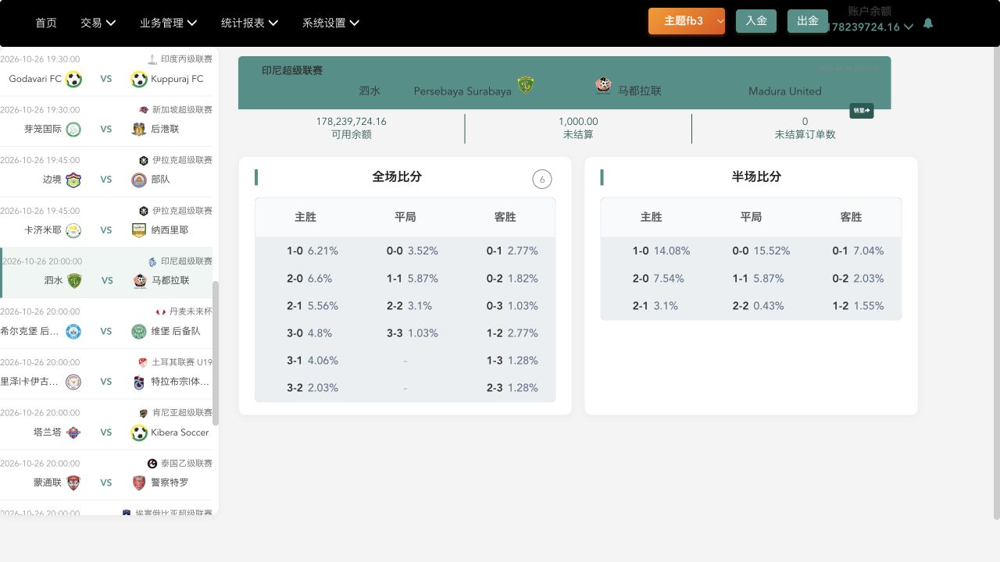
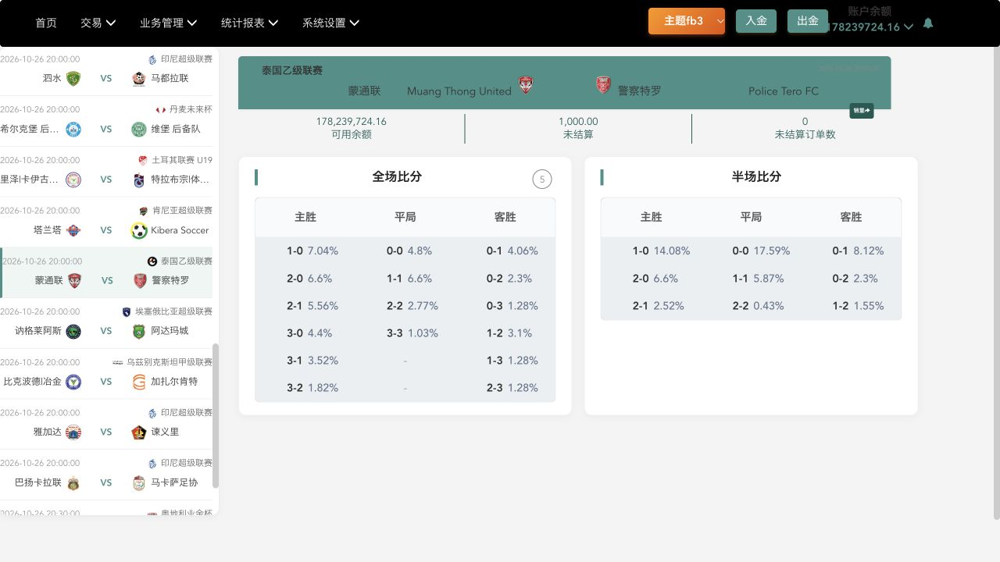
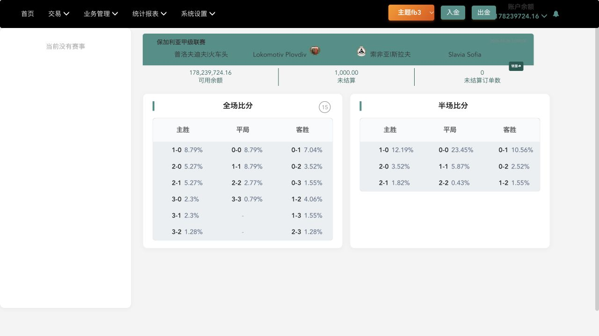
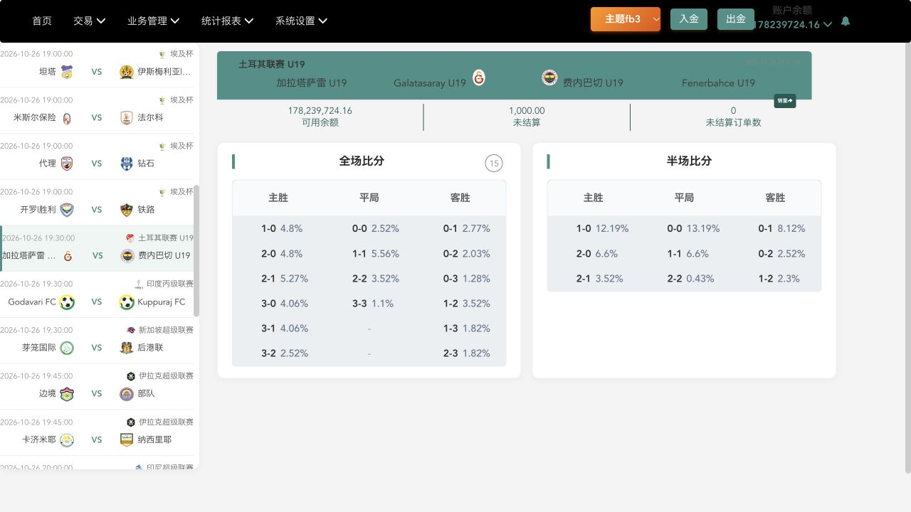
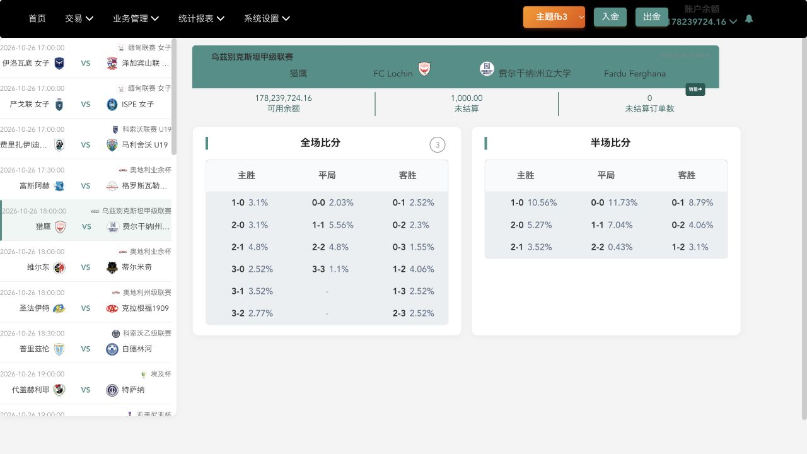
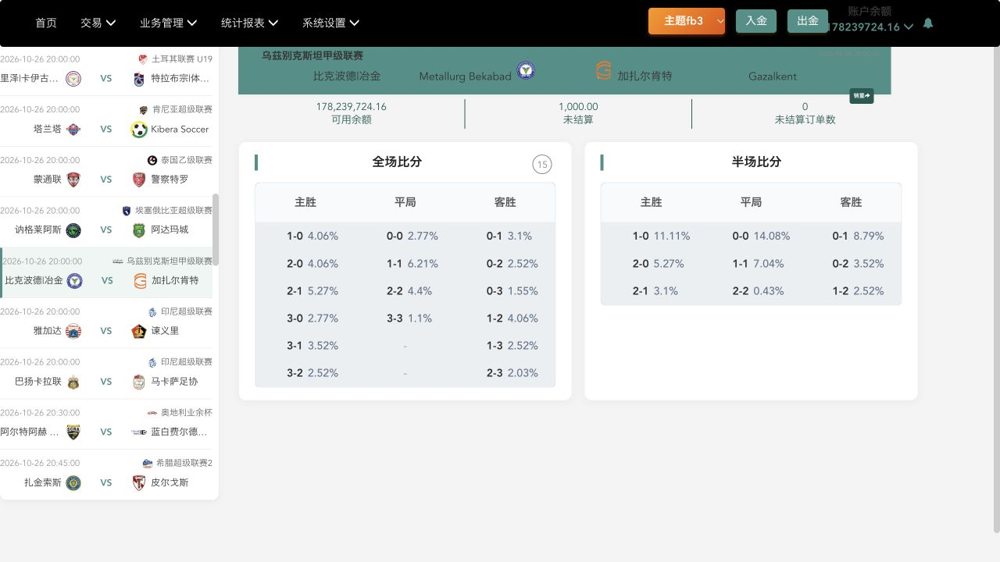
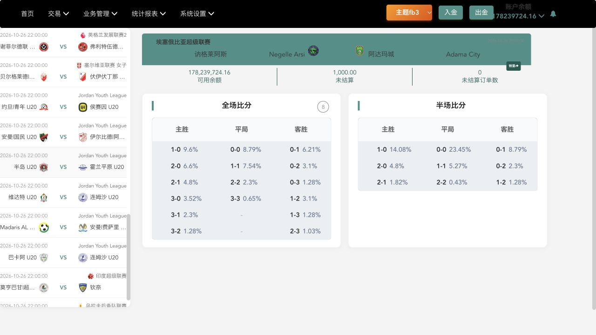

Compiled comparison evidence · 26 October 2026 · Read-only audit. Screenshots are from 1CUF; API figures are calculated from the saved JSON responses, not screenshots of the provider.
112 selections · 7 matches · 6 leagues. Median site/API multiplier: 74.2%. Only 7/112 selections lie within 45%–55%. 28/112 site returns exceed the API-derived return.
API gross return (%) = 100 / (layOdds − 1)Multiplier = site return (%) / API gross return (%)
| Fixture / league | Pairs | Median multiplier | Range | Within 45–55% |
|---|---|---|---|---|
| Persebaya Surabaya v Madura Utd Indonesian Super League | 16 | 65.3% | 50.0%–215.3% | 3 |
| Muangthong Utd v Police Tero Thai League 2 | 16 | 77.2% | 57.7%–229.1% | 0 |
| Lokomotiv Plovdiv v Slavia Sofia Bulgarian A League | 16 | 69.1% | 55.3%–169.0% | 0 |
| Galatasaray U19 v Fenerbahce SK U19 Turkish U19 | 16 | 81.1% | 52.8%–139.5% | 1 |
| FC Lochin v Fardu Ferghana Uzbekistan 1st Division | 16 | 70.4% | 54.2%–98.3% | 1 |
| FK Metallurg Bekabad v Gazalkent Uzbekistan 1st Division | 16 | 78.4% | 65.9%–138.0% | 0 |
| Negele Arsi Ketema v Adama Kenema fc Ethiopian Premier League | 16 | 90.8% | 48.4%–265.9% | 2 |
Captures are not simultaneous; use capture timestamps and feed metadata. Displayed percentages only; site settlement/stake basis and source feed are unverified. Initial captures with delayed table updates were superseded. Full-time CORRECT_SCORE, numeric 0-0 through 3-3 only. Prematch soccer. Convenience sample, not a platform census. No commission assumption.
Timing check: a final API snapshot at 08:37:14 UTC retained 109/112 lay quotes. Recalculating with that snapshot leaves the median (74.2%), near-half count (7), and overall range unchanged. Site/API capture gaps in the primary comparison were 26–179 seconds; all API responses reported stale=false.
Site 2026-10-26T08:30:25.129Z · API 2026-10-26T08:31:11.691964+00:00 · Gap 47s · stale=false

| Score | API lay | API gross return | Site return | Site/API |
|---|---|---|---|---|
| 1-0 | 9.6 | 11.6279% | 6.21% | 53.4% |
| 0-0 | 20 | 5.2632% | 3.52% | 66.9% |
| 0-1 | 24 | 4.3478% | 2.77% | 63.7% |
| 2-0 | 10 | 11.1111% | 6.6% | 59.4% |
| 1-1 | 10 | 11.1111% | 5.87% | 52.8% |
| 0-2 | 60 | 1.6949% | 1.82% | 107.4% |
| 2-1 | 10 | 11.1111% | 5.56% | 50.0% |
| 2-2 | 21 | 5.0000% | 3.1% | 62.0% |
| 0-3 | 210 | 0.4785% | 1.03% | 215.3% |
| 3-0 | 15.5 | 6.8966% | 4.8% | 69.6% |
| 3-3 | 120 | 0.8403% | 1.03% | 122.6% |
| 1-2 | 30 | 3.4483% | 2.77% | 80.3% |
| 3-1 | 16 | 6.6667% | 4.06% | 60.9% |
| 1-3 | 100 | 1.0101% | 1.28% | 126.7% |
| 3-2 | 32 | 3.2258% | 2.03% | 62.9% |
| 2-3 | 95 | 1.0638% | 1.28% | 120.3% |
Site 2026-10-26T08:30:39.017Z · API 2026-10-26T08:31:13.029943+00:00 · Gap 34s · stale=false

| Score | API lay | API gross return | Site return | Site/API |
|---|---|---|---|---|
| 1-0 | 9.2 | 12.1951% | 7.04% | 57.7% |
| 0-0 | 17 | 6.2500% | 4.8% | 76.8% |
| 0-1 | 22 | 4.7619% | 4.06% | 85.3% |
| 2-0 | 11.5 | 9.5238% | 6.6% | 69.3% |
| 1-1 | 10.5 | 10.5263% | 6.6% | 62.7% |
| 0-2 | 55 | 1.8519% | 2.3% | 124.2% |
| 2-1 | 11.5 | 9.5238% | 5.56% | 58.4% |
| 2-2 | 24 | 4.3478% | 2.77% | 63.7% |
| 0-3 | 180 | 0.5587% | 1.28% | 229.1% |
| 3-0 | 19.5 | 5.4054% | 4.4% | 81.4% |
| 3-3 | 140 | 0.7194% | 1.03% | 143.2% |
| 1-2 | 26 | 4.0000% | 3.1% | 77.5% |
| 3-1 | 21 | 5.0000% | 3.52% | 70.4% |
| 1-3 | 95 | 1.0638% | 1.28% | 120.3% |
| 3-2 | 42 | 2.4390% | 1.82% | 74.6% |
| 2-3 | 95 | 1.0638% | 1.28% | 120.3% |
Site 2026-10-26T08:32:29.219Z · API 2026-10-26T08:32:55.587299+00:00 · Gap 26s · stale=false

| Score | API lay | API gross return | Site return | Site/API |
|---|---|---|---|---|
| 1-0 | 7.4 | 15.6250% | 8.79% | 56.3% |
| 0-0 | 9.4 | 11.9048% | 8.79% | 73.8% |
| 0-1 | 12.5 | 8.6957% | 7.04% | 81.0% |
| 2-0 | 12 | 9.0909% | 5.27% | 58.0% |
| 1-1 | 7.6 | 15.1515% | 8.79% | 58.0% |
| 0-2 | 32 | 3.2258% | 3.52% | 109.1% |
| 2-1 | 11.5 | 9.5238% | 5.27% | 55.3% |
| 2-2 | 23 | 4.5455% | 2.77% | 60.9% |
| 0-3 | 110 | 0.9174% | 1.55% | 169.0% |
| 3-0 | 28 | 3.7037% | 2.3% | 62.1% |
| 3-3 | 180 | 0.5587% | 0.79% | 141.4% |
| 1-2 | 18 | 5.8824% | 4.06% | 69.0% |
| 3-1 | 28 | 3.7037% | 2.3% | 62.1% |
| 1-3 | 70 | 1.4493% | 1.55% | 107.0% |
| 3-2 | 55 | 1.8519% | 1.28% | 69.1% |
| 2-3 | 90 | 1.1236% | 1.28% | 113.9% |
Site 2026-10-26T08:34:21.743Z · API 2026-10-26T08:31:49.518888+00:00 · Gap 152s · stale=false

| Score | API lay | API gross return | Site return | Site/API |
|---|---|---|---|---|
| 1-0 | 18 | 5.8824% | 4.8% | 81.6% |
| 0-0 | 38 | 2.7027% | 2.52% | 93.2% |
| 0-1 | 32 | 3.2258% | 2.77% | 85.9% |
| 2-0 | 17 | 6.2500% | 4.8% | 76.8% |
| 1-1 | 14 | 7.6923% | 5.56% | 72.3% |
| 0-2 | 55 | 1.8519% | 2.03% | 109.6% |
| 2-1 | 12.5 | 8.6957% | 5.27% | 60.6% |
| 2-2 | 18.5 | 5.7143% | 3.52% | 61.6% |
| 0-3 | 110 | 0.9174% | 1.28% | 139.5% |
| 3-0 | 21 | 5.0000% | 4.06% | 81.2% |
| 3-3 | 65 | 1.5625% | 1.1% | 70.4% |
| 1-2 | 24 | 4.3478% | 3.52% | 81.0% |
| 3-1 | 14 | 7.6923% | 4.06% | 52.8% |
| 1-3 | 55 | 1.8519% | 1.82% | 98.3% |
| 3-2 | 23 | 4.5455% | 2.52% | 55.4% |
| 2-3 | 50 | 2.0408% | 1.82% | 89.2% |
Site 2026-10-26T08:34:49.136Z · API 2026-10-26T08:31:50.330213+00:00 · Gap 179s · stale=false

| Score | API lay | API gross return | Site return | Site/API |
|---|---|---|---|---|
| 1-0 | 18.5 | 5.7143% | 3.1% | 54.2% |
| 0-0 | 34 | 3.0303% | 2.03% | 67.0% |
| 0-1 | 24 | 4.3478% | 2.52% | 58.0% |
| 2-0 | 20 | 5.2632% | 3.1% | 58.9% |
| 1-1 | 11.5 | 9.5238% | 5.56% | 58.4% |
| 0-2 | 32 | 3.2258% | 2.3% | 71.3% |
| 2-1 | 13.5 | 8.0000% | 4.8% | 60.0% |
| 2-2 | 18 | 5.8824% | 4.8% | 81.6% |
| 0-3 | 60 | 1.6949% | 1.55% | 91.5% |
| 3-0 | 32 | 3.2258% | 2.52% | 78.1% |
| 3-3 | 65 | 1.5625% | 1.1% | 70.4% |
| 1-2 | 17.5 | 6.0606% | 4.06% | 67.0% |
| 3-1 | 21 | 5.0000% | 3.52% | 70.4% |
| 1-3 | 38 | 2.7027% | 2.52% | 93.2% |
| 3-2 | 34 | 3.0303% | 2.77% | 91.4% |
| 2-3 | 40 | 2.5641% | 2.52% | 98.3% |
Site 2026-10-26T08:34:49.748Z · API 2026-10-26T08:32:26.525209+00:00 · Gap 143s · stale=false

| Score | API lay | API gross return | Site return | Site/API |
|---|---|---|---|---|
| 1-0 | 17.5 | 6.0606% | 4.06% | 67.0% |
| 0-0 | 36 | 2.8571% | 2.77% | 97.0% |
| 0-1 | 29 | 3.5714% | 3.1% | 86.8% |
| 2-0 | 18 | 5.8824% | 4.06% | 69.0% |
| 1-1 | 13.5 | 8.0000% | 6.21% | 77.6% |
| 0-2 | 44 | 2.3256% | 2.52% | 108.4% |
| 2-1 | 13.5 | 8.0000% | 5.27% | 65.9% |
| 2-2 | 19 | 5.5556% | 4.4% | 79.2% |
| 0-3 | 90 | 1.1236% | 1.55% | 138.0% |
| 3-0 | 25 | 4.1667% | 2.77% | 66.5% |
| 3-3 | 65 | 1.5625% | 1.1% | 70.4% |
| 1-2 | 21 | 5.0000% | 4.06% | 81.2% |
| 3-1 | 21 | 5.0000% | 3.52% | 70.4% |
| 1-3 | 48 | 2.1277% | 2.52% | 118.4% |
| 3-2 | 30 | 3.4483% | 2.52% | 73.1% |
| 2-3 | 46 | 2.2222% | 2.03% | 91.3% |
Site 2026-10-26T08:35:12.058Z · API 2026-10-26T08:32:29.734764+00:00 · Gap 162s · stale=false

| Score | API lay | API gross return | Site return | Site/API |
|---|---|---|---|---|
| 1-0 | 7.2 | 16.1290% | 9.6% | 59.5% |
| 0-0 | 7.4 | 15.6250% | 8.79% | 56.3% |
| 0-1 | 8.8 | 12.8205% | 6.21% | 48.4% |
| 2-0 | 17 | 6.2500% | 6.6% | 105.6% |
| 1-1 | 7.6 | 15.1515% | 7.54% | 49.8% |
| 0-2 | 24 | 4.3478% | 3.1% | 71.3% |
| 2-1 | 16 | 6.6667% | 4.8% | 72.0% |
| 2-2 | 34 | 3.0303% | 2.3% | 75.9% |
| 0-3 | 110 | 0.9174% | 1.28% | 139.5% |
| 3-0 | 65 | 1.5625% | 3.52% | 225.3% |
| 3-3 | 410 | 0.2445% | 0.65% | 265.9% |
| 1-2 | 19.5 | 5.4054% | 3.1% | 57.4% |
| 3-1 | 65 | 1.5625% | 2.3% | 147.2% |
| 1-3 | 90 | 1.1236% | 1.28% | 113.9% |
| 3-2 | 130 | 0.7752% | 1.28% | 165.1% |
| 2-3 | 150 | 0.6711% | 1.03% | 153.5% |